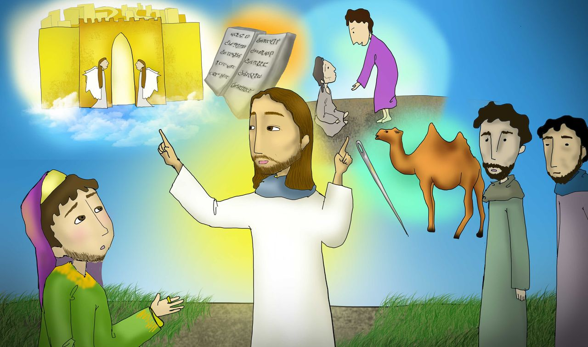
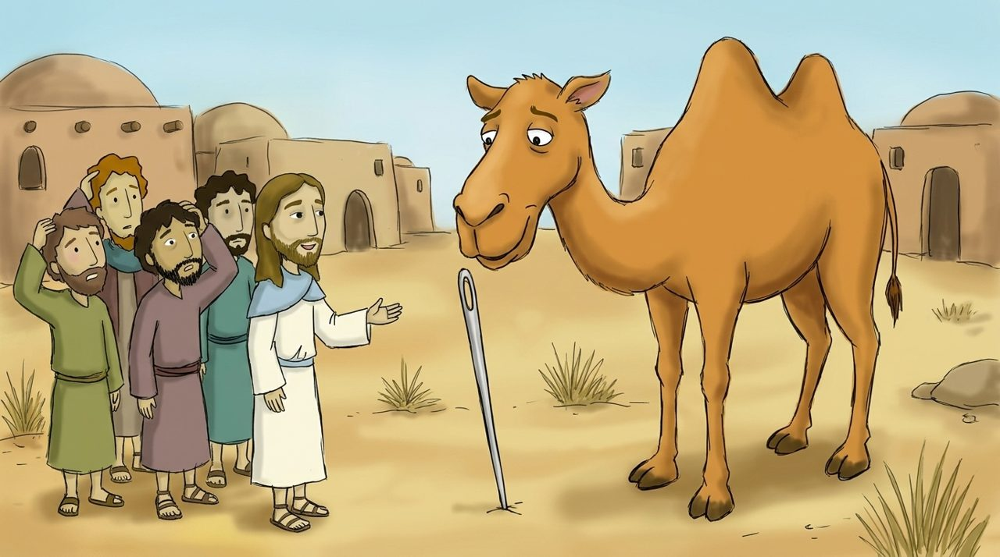
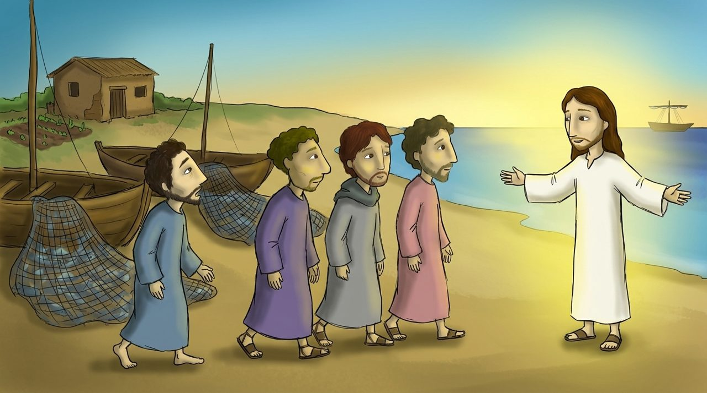

Tap the yellow words to see what they mean. The 🔊 button reads aloud.
What will we learn today?
We will learn that Jesus loved children and blessed them.
We will learn why the rich young man went away sad.
We will decide to love Jesus more than anything else.
Scene 1 · Matthew 19:13–15
Jesus blessing the children
People brought children to Jesus so He could lay His hands on them and pray. But the disciples stopped them, saying, 'Jesus is busy, do not disturb Him!'
Jesus said, 'Let the children come to me, and do not hinder them, for the kingdom of heaven belongs to such as these.' Then He laid His hands on the children and gave them a .

Scene 2 · Matthew 19:16–22
The rich young man's question
A came and asked, 'Teacher, what good thing must I do to get eternal life?' Jesus told him to keep the commandments. The young man said, 'I have kept all of them.'
Jesus said, 'Go, sell your , give to the poor, and come, follow me.' Because the young man had a lot of wealth, he went away sad.

Scene 3 · Matthew 19:23–26
The camel and the eye of a needle
Jesus said, 'It is easier for a to go through the than for a rich man to enter the kingdom of heaven.'
The disciples were amazed and asked, 'Who then can be saved?' Jesus answered, 'With men this is impossible, but with God all things are possible.'

Scene 4 · Matthew 19:27–30
Leaving everything behind
Peter said, 'We have left everything and followed You.'
Jesus promised, 'Everyone who has left houses, family, or lands for my name's sake will receive a hundred times as much, and will inherit eternal life. Many who are first will be last, and the last will be first.'
Memory verse of the week
“Let the little children come to me, and do not hinder them, for the kingdom of heaven belongs to such as these.”
Matthew 19:14 · in simple words for children
Let the little come to me, and do not them, for the kingdom of belongs to such as these.
Choose the words for the blanks in order.
Word list
Tap to see the meaning
Check yourself
4 questions
Let’s think
How would I feel if Jesus hugged me and gave me a blessing?
Just as wealth was precious to the rich young man, is there anything more precious to me than Jesus?
When do the words 'with God all things are possible' give me strength?
Draw it
Draw Jesus hugging and blessing you.
Draw on paper and send a photo to your teacher
How will you come to Jesus?
Let’s pray together
Jesus, thank You for not hindering the children, but hugging and blessing them. I am glad that I can come to You anytime. Help me not to love other things more, like the rich young man did, but to love You more than anything else. I pray in the name of Jesus Christ. Amen.